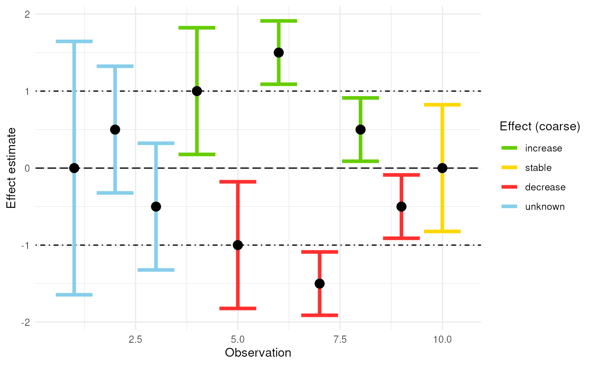

Classifying Effects Using Confidence Limits
Source:vignettes/articles/effect-classification.Rmd
effect-classification.RmdIntroduction
This tutorial demonstrates how to use the
add_effect_classification() function to classify effect
sizes based on confidence intervals. This is useful when you want to
interpret uncertainty in trends or treatment effects using a transparent
and rule-based approach.
About effect classification
The add_effect_classification() function takes a
dataframe with confidence limits and adds classification columns that
describe:
- the direction and strength of the effect (e.g., strong increase, moderate decrease, unknown)
- both fine-grained and coarse interpretations.
It uses the effectclass package internally to perform the classification logic. Classification is based on:
- the lower and upper confidence limits around an effect estimate
- a reference value (e.g., 0 for no effect)
- and a threshold or range of thresholds that define what counts as a meaningful effect
Thresholds and reference values should reflect scientifically or practically meaningful changes — e.g., a biologically relevant increase or decline in a biodiversity indicator.
See the effectclass tutorial for a more elaborate overview.
| Symbol | Fine effect / trend | Coarse effect / trend | Rule |
|---|---|---|---|
++
|
strong positive effect / strong increase | positive effect / increase | confidence interval above the upper threshold |
+
|
positive effect / increase | positive effect / increase | confidence interval above reference and contains the upper threshold |
+~
|
moderate positive effect / moderate increase | positive effect / increase | confidence interval between reference and the upper threshold |
~
|
no effect / stable | no effect / stable | confidence interval between thresholds and contains reference |
-~
|
moderate negative effect / moderate decrease | negative effect / decrease | confidence interval between reference and the lower threshold |
-
|
negative effect / decrease | negative effect / decrease | confidence interval below reference and contains the lower threshold |
–
|
strong negative effect / strong decrease | negative effect / decrease | confidence interval below the lower threshold |
?+
|
potential positive effect / potential increase | unknown effect / unknown | confidence interval contains reference and the upper threshold |
?-
|
potential negative effect / potential decrease | unknown effect / unknown | confidence interval contains reference and the lower threshold |
?
|
unknown effect / unknown | unknown effect / unknown | confidence interval contains the lower and upper threshold |
Getting started with dubicube
# Load packages
library(ggplot2) # Data visualisation
library(dubicube) # Analysis of data quality & indicator uncertaintyYour dataframe must contain lower and upper confidence
limits, e.g. "lcl" and "ucl". Let’s
start with a synthetic dataset of 10 observations.
# Simulated means and standard deviations
ds <- data.frame(
mean = c(0, 0.5, -0.5, 1, -1, 1.5, -1.5, 0.5, -0.5, 0),
sd = c(1, 0.5, 0.5, 0.5, 0.5, 0.25, 0.25, 0.25, 0.25, 0.5)
)
# Compute 90% confidence intervals
ds$lcl <- qnorm(0.05, ds$mean, ds$sd)
ds$ucl <- qnorm(0.95, ds$mean, ds$sd)
# View the dataset
ds
#> mean sd lcl ucl
#> 1 0.0 1.00 -1.64485363 1.64485363
#> 2 0.5 0.50 -0.32242681 1.32242681
#> 3 -0.5 0.50 -1.32242681 0.32242681
#> 4 1.0 0.50 0.17757319 1.82242681
#> 5 -1.0 0.50 -1.82242681 -0.17757319
#> 6 1.5 0.25 1.08878659 1.91121341
#> 7 -1.5 0.25 -1.91121341 -1.08878659
#> 8 0.5 0.25 0.08878659 0.91121341
#> 9 -0.5 0.25 -0.91121341 -0.08878659
#> 10 0.0 0.50 -0.82242681 0.82242681Add effect classifications
We use the add_effect_classification() for effect
classification. It relies on the following arguments:
df: The input data, a dataframe containing confidence limits, e.g. the result of bootstrap confidence interval calculation.cl_columns: A character vector of length 2 specifying the column names indfthat contain the lower and upper confidence limits. For example:cl_columns = c("lcl", "ucl").threshold: A numeric vector defining the effect size threshold(s) used to distinguish between “no effect” and meaningful increases or decreases. This can be either one number (interpreted symmetrically around the reference) or two (explicit lower and upper thresholds).reference: A single numeric value representing the null hypothesis or no-effect level (e.g. 0). The position of the confidence interval relative to this value determines the direction of the effect.coarse: A logical flag indicating whether a simplified classification should also be added. IfTRUE(default), additional columnseffect_code_coarseandeffect_coarseare included, summarizing effects into broader categories (increase, decrease, stable, unknown).
Let’s classify the effects using a threshold of 1 (will
be expanded to [-1, 1] around the reference) and a
reference of 0.
# Perform effect classification
result <- add_effect_classification(
df = ds,
cl_columns = c("lcl", "ucl"),
threshold = 1,
reference = 0,
coarse = TRUE
)
# View the result
result
#> mean sd lcl ucl effect_code effect_code_coarse
#> 1 0.0 1.00 -1.64485363 1.64485363 ? ?
#> 2 0.5 0.50 -0.32242681 1.32242681 ?+ ?
#> 3 -0.5 0.50 -1.32242681 0.32242681 ?- ?
#> 4 1.0 0.50 0.17757319 1.82242681 + +
#> 5 -1.0 0.50 -1.82242681 -0.17757319 - -
#> 6 1.5 0.25 1.08878659 1.91121341 ++ +
#> 7 -1.5 0.25 -1.91121341 -1.08878659 -- -
#> 8 0.5 0.25 0.08878659 0.91121341 +~ +
#> 9 -0.5 0.25 -0.91121341 -0.08878659 -~ -
#> 10 0.0 0.50 -0.82242681 0.82242681 ~ ~
#> effect effect_coarse
#> 1 unknown unknown
#> 2 potential increase unknown
#> 3 potential decrease unknown
#> 4 increase increase
#> 5 decrease decrease
#> 6 strong increase increase
#> 7 strong decrease decrease
#> 8 moderate increase increase
#> 9 moderate decrease decrease
#> 10 stable stableVisualising the result
Detailed guidance on best practices for visualising effect classifications is provided in the tutorials for temporal trends and spatial trends. Below, we demonstrate a simple and direct way to visualise classified effects using ggplot2.
# Define coarse colour palette
coarse_colour <- scale_colour_manual(
values = c(
"chartreuse3",
"gold",
"firebrick1",
"skyblue"
),
drop = FALSE
)
# Define fine colour palette
fine_colour <- scale_colour_manual(
values = c(
"darkgreen",
"chartreuse3",
"darkolivegreen1",
"gold",
"orange",
"firebrick1",
"darkred",
"gray80",
"gray30",
"grey55"
),
drop = FALSE
)The following plot shows point estimates and their 90% confidence intervals, coloured by the coarse effect classification.
ggplot(data = result, aes(x = as.numeric(rownames(result)))) +
geom_hline(yintercept = 0, linetype = "longdash", colour = "black") +
geom_hline(yintercept = c(-1, 1), linetype = "dotdash") +
geom_errorbar(aes(ymin = lcl, ymax = ucl, colour = effect_coarse),
linewidth = 1.5, show.legend = TRUE) +
geom_point(aes(y = mean), colour = "black", size = 3.5) +
labs(x = "Observation", y = "Effect estimate", colour = "Effect (coarse)") +
coarse_colour +
theme_minimal()
The plot below provides a more detailed view using the fine-grained classification.
ggplot(data = result, aes(x = as.numeric(rownames(result)))) +
geom_hline(yintercept = 0, linetype = "longdash", colour = "black") +
geom_hline(yintercept = c(-1, 1), linetype = "dotdash") +
geom_errorbar(aes(ymin = lcl, ymax = ucl, colour = effect),
linewidth = 1.5, show.legend = TRUE) +
geom_point(aes(y = mean), colour = "black", size = 3.5) +
labs(x = "Observation", y = "Effect estimate", colour = "Effect (fine)") +
fine_colour +
theme_minimal()